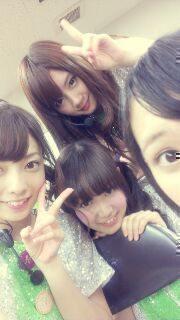
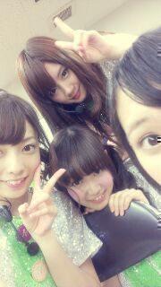

| 2012/10 21 Sun | ひめたん(*>ω<*)そ の217 |
長野わーず(｀・ω・´)
来てくださったみなさん
ありがとうございました！
わちゃちゃー
どあっぷでびーむしてるの誰ぞやー

ーセトリー
走れ！bicycle
おいでシャンプー
涙がまだ悲しみだった頃
狼に口笛を
左胸の勇気
ぐるぐるカーテン
会いたかったかもしれない
長野楽しかったー(*>ω<*)
あんなにしっかりliveやったのは
久々だった気がする！
寒いんかなーって思ったけど
最初ちょっと寒かったけど
踊ってたらめちゃ汗だくなったよー
熱いぜ長野おーべいべ←
今朝の集合がはやいから
前日みんなでホテル泊まってたの！
ねねころひめたんぺあ＼(^^)／

ホテルで写真撮ろかなって
思ったんだけどね
素っぴんだったのでやめました←
悪しからず(´・ω・｀)
ころ部のみなさーん
ねねころと一緒に寝たんだよー
いいでしょいいでしょ＊
まりかとみくもってぃも
お部屋に遊び来て、
4人でまったりまったりしたのよー
ふふふのふ♪
てかひめたんりぼんの
ぴんくバージョンでてきた！
来てくださったみなさん
ありがとうございました！
わちゃちゃー
どあっぷでびーむしてるの誰ぞやー

ーセトリー
走れ！bicycle
おいでシャンプー
涙がまだ悲しみだった頃
狼に口笛を
左胸の勇気
ぐるぐるカーテン
会いたかったかもしれない
長野楽しかったー(*>ω<*)
あんなにしっかりliveやったのは
久々だった気がする！
寒いんかなーって思ったけど
最初ちょっと寒かったけど
踊ってたらめちゃ汗だくなったよー
熱いぜ長野おーべいべ←
今朝の集合がはやいから
前日みんなでホテル泊まってたの！
ねねころひめたんぺあ＼(^^)／
ホテルで写真撮ろかなって
思ったんだけどね
素っぴんだったのでやめました←
悪しからず(´・ω・｀)
ころ部のみなさーん
ねねころと一緒に寝たんだよー
いいでしょいいでしょ＊
まりかとみくもってぃも
お部屋に遊び来て、
4人でまったりまったりしたのよー
ふふふのふ♪
てかひめたんりぼんの
ぴんくバージョンでてきた！

 ひめたんってメンバーの仲で誰と一番仲いいん？
ひめたんってメンバーの仲で誰と一番仲いいん？
みんな仲いいよー∩^ω^∩
特に誰かと聞かれたらやっぱ中3組かな。
そしてみゅみゅは私の夫です。まじ顔。
そう言えばまりかのブログでひめたん小悪魔って言われてたけど、ひめたんって小悪魔的なことしとるん？
ひめたんは天使(｀・ω・´)きりっ
好きな子できたらひめきゅんどうしましょ？
浮気かこのやろ(*>ω<*)てへ
ってなーるっ
 いつかまた個別で握手行くから、待っててくれる？
いつかまた個別で握手行くから、待っててくれる？
待ってるよー♪ありがとーうー///
LIVEはうまく行きましたか
んー楽しかった！
やっぱlive好きよー
歌うの踊るよすーきっ＊
 名物たくさん食べれたかな？
名物たくさん食べれたかな？
たくさん名物用意していただいた！
...のですが、お菓子類は残念ながら回避させていただきました(°Д°)
ごめんね名古屋のお菓子さんたち。
またいつか名古屋行ったらちゃんと食べるから、ちょーっと待っててくれーい
ひめたんが可愛い過ぎてヤバい( ；´Д｀)
どーしたらいい？笑
どーしたらいいんだろうね？
とりあえず、ひめたんが可愛い過ぎてヤバいヤバいヤバいよーうひゃひゃってなるまでは様子見かなー♪
一緒に泊まるメンバーっていつもスタッフさんが決めるの？
そだーよ！
ひめたんにはまだヒールを履くのは早いカナ？
ふはは。
完全にヒールをなめてましたね。
やーあんなものとうぶん履いてやらんーとか言いながら
きっと近々ヒールで歩く練習を始めると思います。
またひめたんの個別に参加して、ひめたんビームでイチコロになっていいかな？
あら素敵＊
みんなのはーとをイチコロ！ねねころー
(<・ω・>)びーむ
クイズの正解は明日ー！

(＊´・ω・＊)ひめたん
(＊´・ω・＊)ひめたん
コメント(168)
2012/10/21 23:06